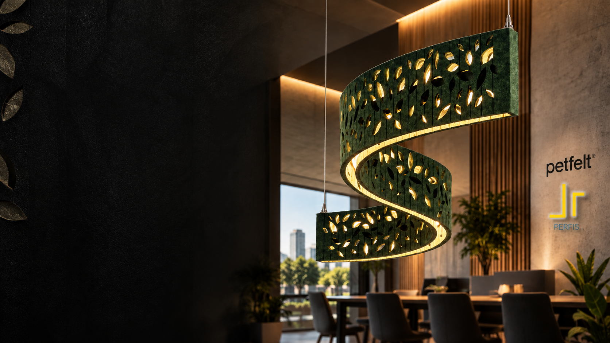
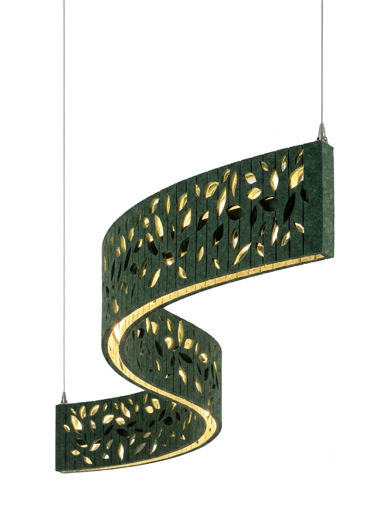
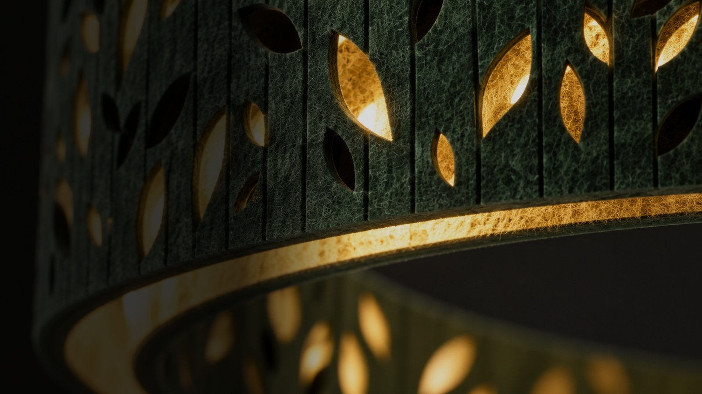
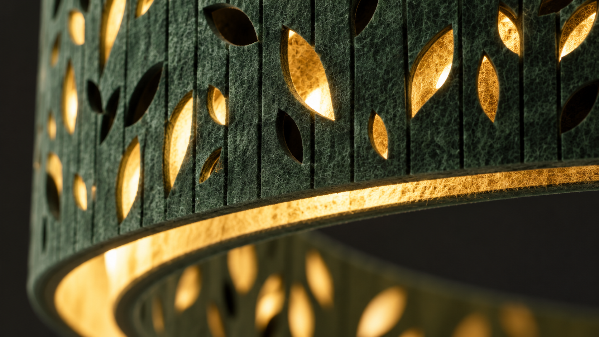
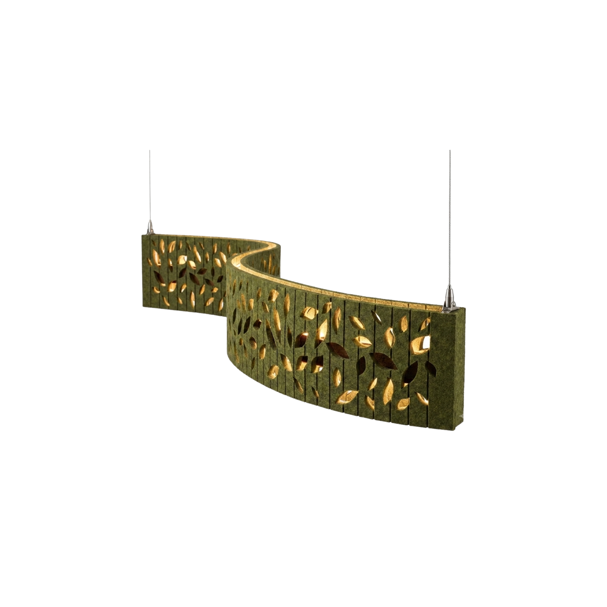

Iluminação + Acústica + Design biofílico
LIORA
Poesia em luz e natureza.
Uma luminária acústica autoral que integra luz, matéria, silêncio e natureza em uma presença escultórica para arquitetura contemporânea.
EXPOLUX 2026 · SELO ILUMINA · INOVAÇÃO DO ANO
Reconhecimento
Expolux 2026
Reconhecida pelo Selo Ilumina como Inovação do Ano, a LIORA reposiciona a luminária como objeto arquitetônico: luz, acústica, matéria e natureza em um único gesto.
Selo Ilumina · Inovação do Ano

A alma da LIORA
Entre a curva
e a folha.
A LIORA nasce da transposição da fluidez das folhas e das curvas orgânicas para uma solução de iluminação arquitetônica de alto padrão.
Natureza · Luz · Silêncio · Arquitetura

Forma
O traço em “S” como assinatura.
A curva escultural organiza a peça no espaço e transforma a luminária em um elemento de presença — não apenas um ponto de luz.
- 01 Curva orgânica
- 02 Exterior sóbrio
- 03 Interior luminoso
- 04 Geometria botânica

Komorebi
KOMOREBI
A dança da luz e sombra.
A luz filtrada entre as folhas inspira os recortes botânicos da LIORA: sombras, profundidade e uma atmosfera natural dentro do ambiente.
“A luz que acalma. O design que respira.”
Tecnologia de luz
2700K — 5000K
Temperatura de cor variável para acompanhar diferentes cenas: do acolhimento quente ao foco visual mais frio.
- LED CCT dinâmico
- 240 LEDs/m
- 14,4 W/m
- IRC > 90
- 24V DC
O silêncio também
pode ser projetado.
O PETfelt de 12 mm funciona como pele acústica e materialidade visual. A peça ilumina, mas também contribui para ambientes mais confortáveis e humanos.
αw ≥ 0,65
Absorção acústica declarada
Materialidade
PETfelt reciclado
+ alumínio
Revestimento composto por fibras recicladas de garrafas PET, combinado a perfis de alumínio e montagem limpa.
Excelência térmica passiva
Perfis duplos de alumínio formam um canal de troca de calor, conduzindo a temperatura dos LEDs de forma silenciosa e sem ventilação ativa.
LIORA / Desenho técnico
2000 mm × 350 mm × 200 mm
Aplicações arquitetônicas
Presença em diferentes escalas
Luz que atravessa a matéria.
Recortes botânicos revelam a luz em camadas: alguns vazios brilham, outros permanecem em sombra, criando profundidade visual.
PETfelt verde profundo · bordas iluminadas · microtextura tátil
Especificações
Ficha técnica
| Estrutura | Perfis duplos de alumínio curvados em “S”; pintura eletrostática microtexturizada. |
|---|---|
| Luz | LEDs CCT dinâmicos Lucchi, 240 LEDs/m, 14,4 W/m, IRC > 90. |
| Material | PETfelt 12 mm, 100% reciclado, absorção acústica αw ≥ 0,65. |
| Dimensões | 2000 mm × 350 mm × 200 mm. |
| Espectro | 2700K a 5000K. |
| Conexão | Controle wireless e fonte tensionada 24V. |
Versatilidade e exclusividade
Sua forma orgânica permite aplicações isoladas ou composições em série, adaptando-se a diferentes contextos arquitetônicos de alto padrão.
- Instalação simplificadaSistema de fixação inteligente para montagem rápida e precisa.
- Adaptabilidade espacialIntegração em recepções, salas executivas e ambientes de alto padrão.
- Valor percebidoElemento de prestígio, design assinado e presença escultórica.

LIORA
LUZ.
MATÉRIA.
SILÊNCIO.
NATUREZA.
EXPOLUX 2026 · SELO ILUMINA · INOVAÇÃO DO ANO
Solicitar um projetoSolicitar um projeto
Fale diretamente com nossa equipe pelo WhatsApp e conte um pouco sobre o seu projeto arquitetônico.
Falar no WhatsApp